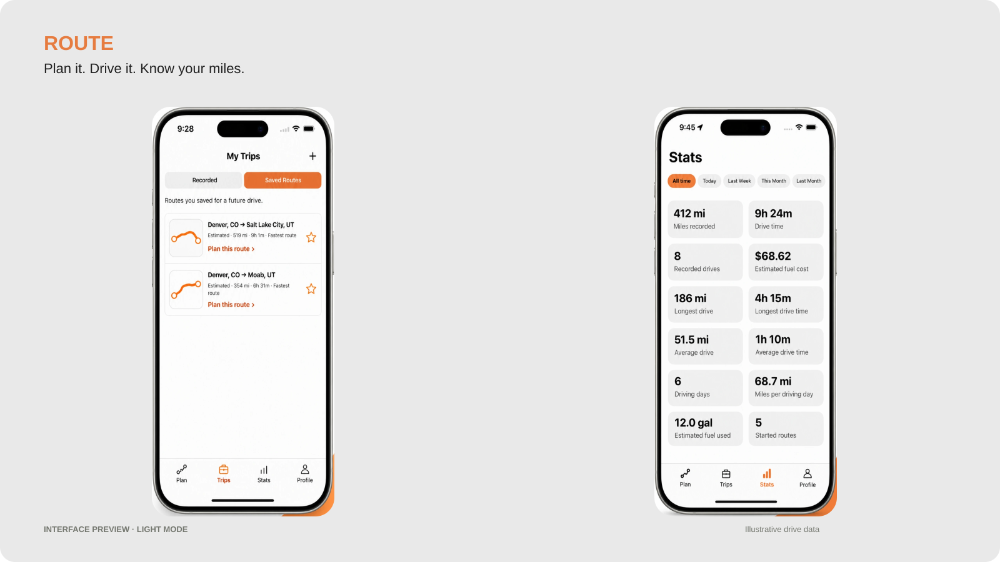
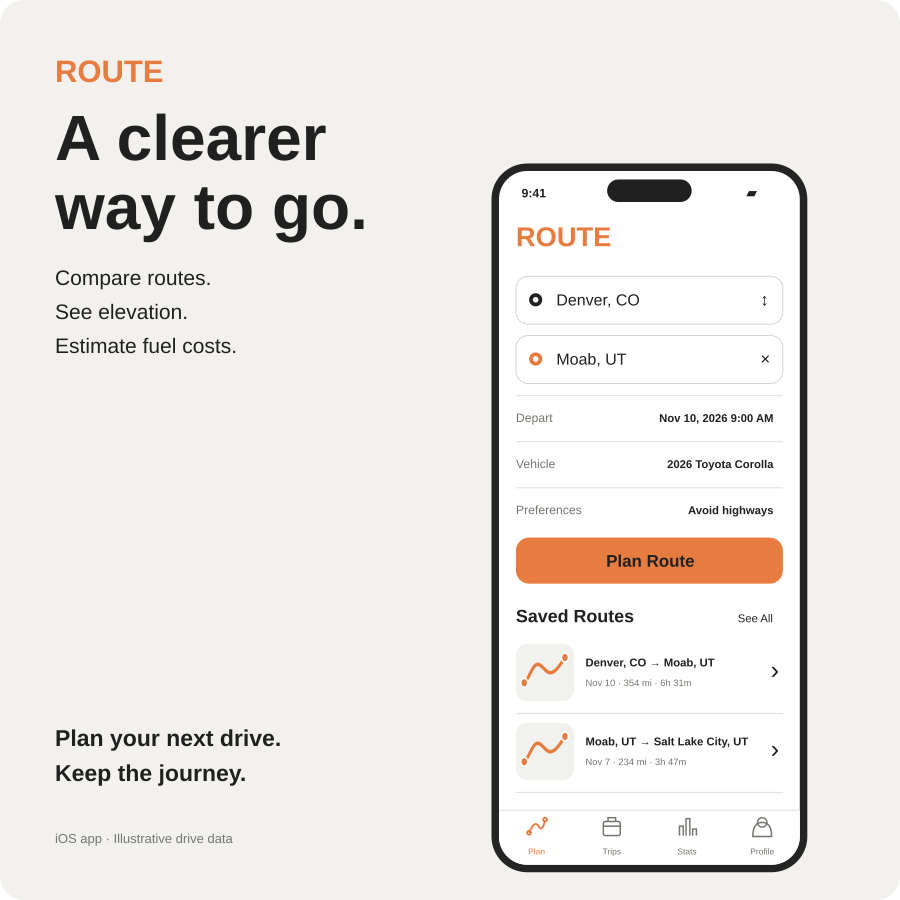
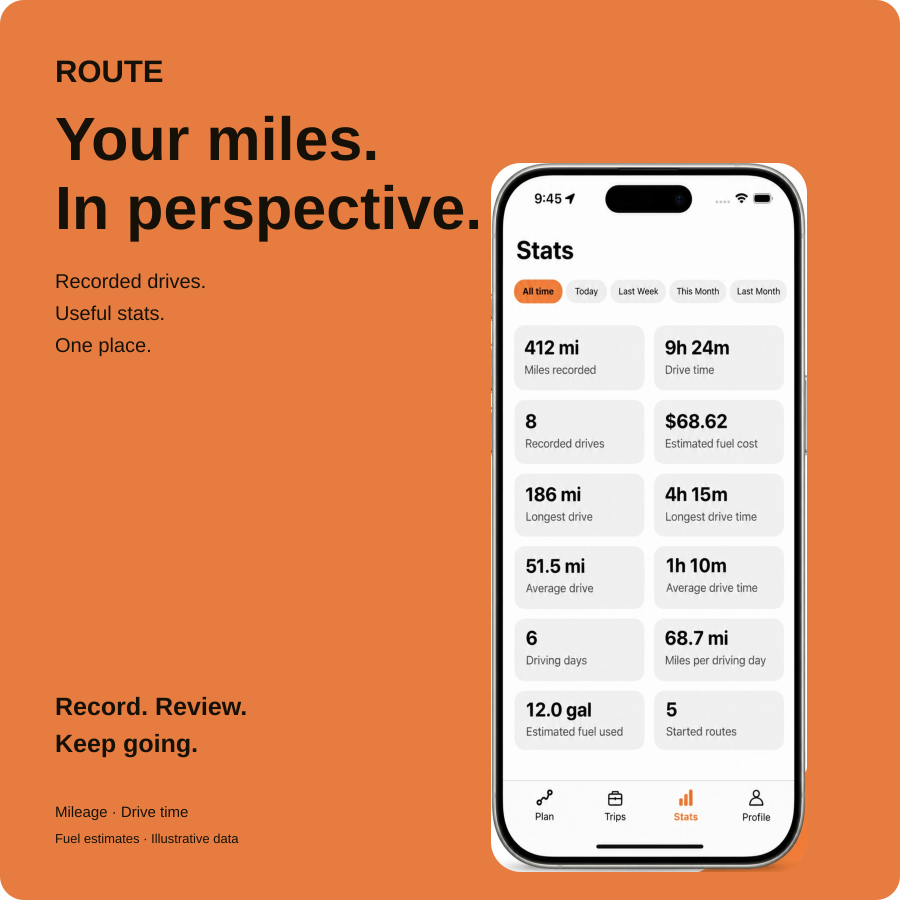

Route: Plan & Track
Plan the drive.
Understand the journey.
As someone who drives every day, I wanted a clearer picture of where I went, how much I drove, and what it cost. So I built Route: Plan & Track, an iOS app that connects route planning, automatic drive recording, and personal driving statistics. From concept to App Store launch in four days, I designed the brand, all the UI/UX, and website while writing the backend code as well as the frontend code with the help of AI tools.
- Role
- Independent Product Designer & Developer
- Year
- 2026
- Scope
- Product strategy, UI/UX, branding, development and testing
A functional iOS app tested on a physical iPhone. No account is required; drive history is stored locally.

THE CHALLENGE
Directions are only one part of a drive.
A route’s distance and arrival time help someone decide how to get there. They do not, on their own, explain what the drive may cost in fuel or how it fits into a person’s broader driving habits.
I started with a product hypothesis: bringing planning and recorded history together could make that information more useful, without adding another task for drivers to remember. This was an independent design and development project, rather than a commissioned redesign backed by formal user research.
Scattered information
Planning, recorded mileage and fuel estimates need a shared home.
Costs without context
Fuel estimates need to reflect the vehicle and explain their assumptions.
Tracking to remember
Manual recording can be easy to forget during an ordinary day.
How might we help drivers plan a journey, capture their driving activity and understand its time, distance and estimated cost?
PRODUCT STRATEGY
Complement navigation. Own the before and after.
I chose not to build a turn-by-turn navigation system. ROUTE focuses on choosing a drive and making sense of it afterward, while Apple Maps handles navigation.
That boundary kept the first version focused, but introduced an important limitation: Apple Maps calculates its own path. ROUTE explains that the selected alternative, departure time and avoidance preferences are not carried into the handoff.
Plan
Compare available routes, terrain and preferences before leaving.
Track
Capture completed driving activity with automatic or explicitly started recording.
Reflect
Review individual drives and see patterns across recorded history.
DESIGNING THE EXPERIENCE
One connected product, four clear destinations.
I organized the app around Plan, Trips, Stats and Profile. Each tab answers a different question: Where am I going? What have I saved or driven? How much am I driving? Which vehicle and settings am I using?
01 / Give planning more context
Plan keeps the starting point, destination, departure time, vehicle and route preferences together. Current location appears first in starting-point suggestions; highway and toll preferences open as an inline checklist.
Route Options pairs available alternatives with an elevation profile. A resizable sheet lets people give more space to the map or the route information. I pinned the Route/Fuel tabs and Start Route action so they remain accessible while the content scrolls.
Design decision: Keep station discovery inside the route comparison flow, where it relates to the drive being considered.
02 / Make recording useful without planning
Automatic recording uses motion and location updates to detect driving activity under supported iOS conditions. A person can build a history without planning every commute or remembering to press Start.
For an intentional journey, Start Route begins a recording linked to the selected plan. The active state and End Route control make that session explicit. Ending it opens an arrival summary with the recorded path, distance, elapsed time and estimated fuel cost.
Design decision: Keep automatic recording independent of planning, while offering an explicit link when someone chooses Start Route.
03 / Distinguish intention from history
Saved Routes and Recorded drives share the Trips tab, but represent different things. A saved route is something to revisit or plan. A recording is evidence of a drive that took place.
I used a consistent list layout so both are easy to scan, with an orange path preview and endpoint names. The arrival summary provides Edit and Delete through an overflow menu. I removed the completed-drive Save Route action to keep that summary focused on the recording.
Design decision: Use consistent presentation without treating a planned route and a completed drive as the same record.
04 / Turn recordings into a useful overview
Stats gives the accumulated history a purpose beyond opening individual drives. A two-column card layout presents recorded miles, elapsed drive time, drive count, longest drives, averages and active driving days.
Week, month, year and all-time filters change the scope. Fuel cost and fuel used are explicitly labeled as estimates, with details about saved MPG, price sources and eligible recordings. Missing data stays unavailable rather than becoming a misleading zero.
Design decision: Move aggregate driving information out of Profile. Keep Profile focused on vehicles, personal information and settings.


VISUAL DESIGN
A recognizable utility, built for quick reading.
I developed an orange-and-white light theme and a near-black dark theme. Orange identifies primary actions, selected routes and recorded paths; neutral surfaces keep attention on the information.
Large numerical values, clear labels and repeatable card patterns help distinguish distance, duration and estimates. Route-only thumbnails reduce visual noise in history lists. Shared spacing, icons and persistent navigation make the screens feel like parts of the same product.
ENGINEERING THE EXPERIENCE
Reliability is part of the interface.
I implemented the interface with web technologies inside a Capacitor iOS app, using Swift for native mapping, motion and location recording. Apple MapKit supplies maps and route alternatives; external services provide elevation, vehicle ratings and fuel-price information.
Recorded drives retain GPS samples and vehicle information locally. Fuel estimates use saved vehicle MPG and the available state-average price. They are estimates, not measured fuel consumption or receipts.
Protect the recording
Active-drive checkpoints support recovery. Completed history is saved before its checkpoint is cleared.
Separate failures
An elevation or station-search failure should not make a valid route disappear. Each service needs its own feedback and recovery.
Keep data usable
Cached responses carry timestamps. Manual backup and restore give people a way to move or recover local history.
When a live route request fails, ROUTE can fall back to the latest cached route with matching endpoints and avoidance preferences. The interface identifies its travel time as a saved estimate. Local GPS recording does not require an internet connection; fresh routes and external data still depend on their services.
TESTING AND ITERATION
Taking the app beyond the simulator.
I tested ROUTE on a physical iPhone through real drives, including locked-screen recording, switching between apps, connectivity changes, reopening the app and checking persistence. I also checked vehicle selection, route planning, permissions and the relationship between recorded history and Stats.
In one mileage check, ROUTE recorded 1.3 miles, matching the vehicle’s odometer reading. This was a practical spot check, not a broad accuracy benchmark.
Automated checks covered calculations, date boundaries, cached-route fallback, backup validation and duplicate handling, plus interface flows using mocked native bridges. I treated those checks as a complement to device testing, rather than proof of background behavior.
What changed through iteration
- From mixed trips to clear categories: separated Saved Routes from completed recordings.
- From disappearing controls to a stable sheet: pinned the Route/Fuel tabs and main action while the content scrolls.
- From scattered totals to Stats: created a dedicated overview of recorded driving.
- From a long details screen to an arrival summary: prioritized the path and key numbers, with editing available when needed.
- From generic loading to useful recovery: added independent error states, retry actions and dated cached results.
OUTCOME
A working iPhone app that connects planning and driving history.
ROUTE grew from a route-comparison concept into a functional application with automatic GPS recording, saved routes, multi-vehicle management, elevation, station discovery, driving statistics and local backup tools.
The result is a complete first-version product loop: plan a drive, record what happened and review the activity afterward. It demonstrates my ability to take an independent product from strategy and interaction design through implementation and physical-device testing.
Validation so far is based on my own device testing and automated checks. I am not presenting adoption, retention or usability improvements as measured outcomes. Testing with other drivers is the next step.
REFLECTION
Automation makes trust the design problem.
Building ROUTE changed how I thought about the role of its screens. When recording can happen without someone opening the app, the interface needs to explain what was captured, what is estimated and what remains available after an interruption.
Permissions, checkpoint storage, service failures and vehicle selection all became interaction-design decisions. Keeping the first release focused meant making those connections dependable instead of adding a full navigation system.
Make driving information useful without making tracking another task to remember.Back to the project ↗